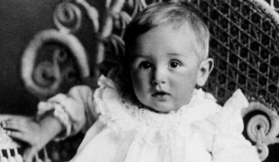
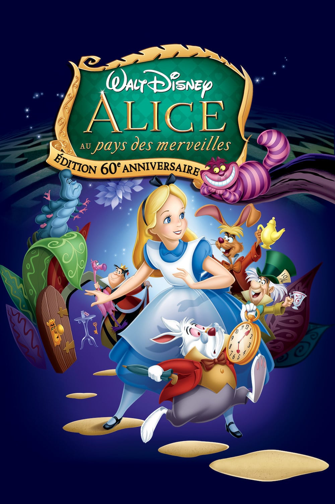
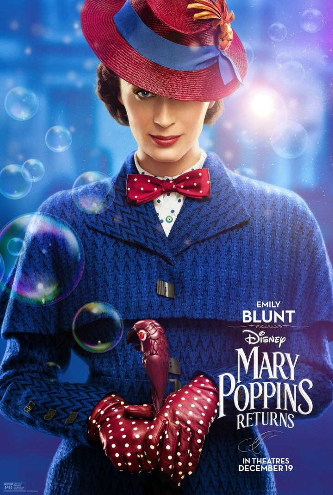

월트 디즈니
[ Walt Disney ]
"애니메이션하면 대표적으로 떠오르는 브랜드 ‘월트 디즈니’. 월트 디즈니는 애니메이션과 관련 업계를 주도하는
회사 이름이기도 하지만 이 회사를 만든 전설의 경영자이자 애니메이션 연출가, 제작자, 애니메이션의 스토리와 캐릭터를
구상한 창업주의 이름이기도 하다. 세계적으로 가장 널리 알려진 캐릭터 미키 마우스를 탄생시킨 장본인이며,
장본인이며, 애니메이션이라는 새로운 문화 장르를 개척했고, 꿈을 현실로 이루어낸 디즈니랜드를 건설한 월트 디즈니는 가장 20세기적인 인물이었다.
- 국적: 미국
- 출생: 1901년 12월 5일 미국 일리노이주 시카고
- 사망: 1966년 12월 15일, 미국 캘리포니아주 버뱅크
- 활동: 1920년 ~ 1966년
- 직업: 애니메이터, 영화 감독, 성우, 기업인
- 학력: 맥킨리 고등학교 시카고 미술학교
-

PART.1 애니메이션의 대명사
"월트 디즈니는 애니메이션을 문화적 상품이자 작품으로 만들어낸 인물이다. 다수의 애니메이션 캐릭터를 개발하면서
20세기이후, 캐릭터 산업이라는 새로운 사업 영역을 개척한 장본인이기도 하다.
그는 1955년에는 그 누구도 상상 못한 거대 규모의 테마 파크 ‘디즈니랜드’를 건설하면서
어린이들이 상상하고 꿈꾸던 것이 눈앞에서 현실화되는 경험을 할 수 있도록 했다.
PART2. 힘들었던 어린시절

1). 월트 디즈니는 20세기가 막 발을 떼기 시작한 1901년 미국 시카고에서 태어났다.
시골에서 어린 시절을 보낸 디즈니는 이 시절을 자신의 생애 중 가장 아름다운 시기로 추억하였고
그의 작품 속에 녹아 있는 목가적인 풍경들도 모두 이 시기의 경험과 그리움 속에서 나온 것이라고 한다.
2). 그러나 월트 디즈니의 시골생활은 그리 오래 가지 못했다.
디즈니의 아버지는 상당히 엄격한 사람이었고 자식들에게 냉정했으며 그들과 갈등을했고
이때의 쓰라린 기억으로 월트 디즈니는 평생 아버지와 소원했고,
어린이들이 따뜻함과 편안함 속에서 행복감을 느낄 수 있는 세계를 늘 꿈꾸었다고 한다.
그 결과가 훗날 그가 건설한 디즈니랜드였다.
3). 디즈니는 어렵사리 아버지의 마지못한 허락을 받아 중등 과정을 가르치는 캔자스시 예술 디자인 학교에 입학했다.
1917년 디즈니 가족은 다시 시카고로 이주했고 월트 디즈니는 고등학교에 입학했지만 학교 성적은 그다지 좋지 못했다.
학교 신문에 삽화 등을 그리며 청소년기를 보내던 월트 디즈니는 1차대전 발발과 동시에 학교를 그만뒀다.
그러나 16살 월트 디즈니는 군인으로서는 나이가 미달이었고 결국 미국 적십자 트럭 요원으로 입대해하였다.
br/>
그는 상업 광고를 제작하는 회사의 도안사로 사회 생활을 시작하면서 애니메이션의 세계에 눈을 뜨게 된다.
PART3. 월트 디즈니 스튜디오 탄생
1. 래프 오 그램 (Laugh-O-Gram)
트는 집의 차고를 스튜디오로 개조해 거기서 다니던 회사의 카메라를 빌려다 영화적인 기교를 익혔다.
론 그런 기교는 촬영방식을 확인하는 식의 거의 원초적인 작업이었고 무언가를 알아볼만한 애니메이션 교습서도 드물었다.
당시 애니메이션에 관심 있던 사람들의 필독서였던 E.G 러츠의 애니메이션 교습서만이 월트의 유일한 교과서였고 그것을 읽으며 월트는 셀 애니메이션의 기본기를 익혔다.
'래프 오 그램 (Laugh-O-Gram)'이라고 이름지은 1분짜리 애니메이션 필름 릴을 회사 동료였던 하먼 형제와 만들어서 뉴먼 극장의 주인 프랭크 뉴먼을 찾아갔다.
'래프 오 그램'은 그시절의 소단위 규모의 사회문제들을 풍자한 짧은 만화로 신문에 연재되는 풍자만화들의 영향을 강하게 받은 작품이었다.
월트가 찾아간 뉴먼은 예전에 월트가 일했던 미술가게의 페스먼이 소개해준 자였는데 1분의 짧은 시사를 마친 뒤 지체 없이 그 필름을 사고는 월트와 시리즈 계약도 맺었다.
2. 최초의 디즈니 스튜디오
재정적인 문제로 래프 오 그램의 운영이 쉽지 않았던 월트는 새로운 시작점을 헐리우드로 결정지었지만 당대 애니메이션의 중심지는 당연 뉴욕이었다
헐리우드 역사상 최초의 여성 배급자인 마거릿 윈클러가 월트 디즈니에게 관심을 보이기 시작한 것이다.
그녀는 월트의 '앨리스의 이상한 나라'를 보자마자 시리즈의 성공 가능성을 점치고는 시리즈 배급계약을 제의했다
일이 워너브라더스에 있던 윈클러의 상사에게도 알려지면서 그렇게 월트 디즈니의 워너브라더스에서의 첫 번째 경력이 시작되었다
3. 디즈니 스튜디오 관련 영상
유트브에서 보기PART4. 미키마우스의 탄생
초기에 두 사람이 그린 캐릭터는 빼앗긴 캐릭터 오스왈드와 유사했다. 이를 아이웍스가 쥐처럼 귀를 줄이고 둥글게 만들어 새로운 캐릭터를 만들어냈다.
미키마우스는 처음에는 오늘날처럼 귀엽고 선량한 이미지가 아니었다. 귀엽기는 했지만 다소 기괴한 모습에 성격도 살짝 비틀어진 월트 디즈니 자기자신을 투사한 듯한 모습이었다.
1928년, 월트 디즈니는 배경 음악을 깔고 미키 마우스에 목소리를 더빙해 [스팀보트 윌리(Steamboat Willie)]를 공개했다. 이 애니메이션은 예상을 뛰어 넘는 빅히트작이 되었다.
미키 마우스와 그 여자 친구 미니마우스가 월트 디즈니 회사의 간판 스타로 활약하는 동안, 월트 디즈니는 갖가지 새로운 애니메이션의 실험을 하면서 대중들로부터 각광을 받기 시작했다
회사 월트 디즈니에서는 미키 마우스 외에도 도날드 덕, 플루토, 구피 등의 후속 캐릭터를 선보이면서 디즈니적인 세계를 구축해갔다.
<미키마우스 소개>

미키 마우스(Mickey Mouse)는 수컷 쥐를 의인화한 캐릭터이다. 디즈니 애니메이션이나 각종 미디어 믹스에 등장하는 월트 디즈니 컴퍼니의 심볼 캐릭터이다.
2018년 11월 28일 현재는 90년만에 처음으로 한국에 첫내한을 했다.
<호칭>
- 1.중국에서는 米老鼠(mǐlǎoshŭ,미라오슈),혹은 米奇(mǐqí, 미치 혹은 마이케이)라고 불린다.
- 2.이탈리아에서는 Topolino(토폴리노)라고 불린다.
- 3. 스페인에서는 Ratón Miguelito(라톤 미겔리토)라고 불린다.
- 4.핀란드에서는 Mikki Hiiri(미키 히리)라고 불린다.
- 5. 인도네시아에서는 Miki Tikus(미키 티쿠스)라고 불린다.
- 6. 한국에서는 미키 마우스라고 불린다.
<성격>
대체로 긍정적인 사고를 가지고 있어 무슨 일을 당해도 다시 일어서고,남을 배려하는 세심한 면도 보인다.
정의감이 강하여 누군가 잘못된 행동을 하면 말리고,싫어하는 사람과 좋아하는 사람에 대한 태도가 확연히 다르게 나타난다.
장난치기 좋아하는 면이 있어 은근슬쩍 도널드에게 장난치기도 한다.
한편으로는 덤벙대서 무언가 잘 잊어버리는 경향이 많아,미니 마우스에게 꾸지람을 듣는 경우가 많다.
<미키마우스클럽 영상>

《미키마우스 클럽하우스》는 미국 월트 디즈니 컴퍼니가 제작한 텔레비전 애니메이션이다.
<미키마우스의 이야기>
PART5. 마침내 궤도에 오르다
세계 공황이 밀어닥친 1933년 월트 디즈니는 ‘아기돼지 삼형제’를 내놓으면서 만화 주제곡
‘아기돼지 삼형제’의 인기는 마침내 월트 디즈니를 지긋지긋한 재정적 궁핍으로부터 벗어나게 해주었고 회사는 궤도에 오르게 되었다.
1937년 월트 디즈니는 마침내 장편 애니메이션에 도전해 첫 작품으로 [백설공주와 일곱 난장이]를 공개하였다. 결과는 대성공이었다.
시사회에 초청된 클라크 게이블은 영화가 끝날 때까지 눈물을 멈출 수가 없었고
러시아의 대감독 에이젠슈타인은 걸작이라고 평가했으며 개봉 후 흥행은 그야말로 ‘대박’이었다.
여세를 몰아 월트 디즈니는 3년여 동안의 제작 기간을 투입해 스트라빈스키, 차이콥스키 등이 남긴 대표적인
고전 음악을 배경곡으로 활용한 [환타지아(Fantasia)](1940)를 공개했다. 이 작품은 애니메이션이 아동들만의
것이라는 편견을 깨게 만들었다. 애니메이션 장르의 무한한 잠재성을 다시 한번 일깨워 준 것이다. 연이어 월트
디즈니는 [피노키오(Pinocchio)](1940)와 [아기코끼리 덤보(Dumbo)](1941)를 공개해 전세계적으로 엄청난
흥행 수익을 올리게 된다
1950년대 들어 디즈니는 장편 애니메이션에 총력을 쏟아 자연 탐구의 모험담과 남녀간의 달콤한 로맨스를 소
재로 한 [비버 밸리 (Beaver Valley)](1950), [사막은 살아있다(The Living Desert)](1953), [신데렐라
Cinderella)](1950), [앨리스의 이상한 나라 (Alice in Wonderland)](1951), [피터 팬(Peter Pan)](1953)
등을 잇달아 극장가에 선보였다. 월트 디즈니는 애니메이션뿐만 아니라 간간히 극영화 제작에도 뛰어 들었는데
1964년에는 줄리 앤드루스 주연의 [메리 포핀스(Mary Poppins)]를 빅히트 시키면서 타의 추종을 불허하는 부와 명성을 얻게 된다.
PART6. 디즈니랜드 건설
애니메이션으로 성공 가도를 달리고 있던 월트 디즈니는 또 한번의 새로운 계획을 발표하고 이를 실행시켜 세상을 놀라게 했습니다.
월트 디즈니가 하나부터 열까지 모든 기획에 참여한 디즈니랜드는 ‘꿈꾸던 환상이 지금 바로 여기에’를 보여주는 것이었다.
1955년 7월에 개장한 디즈니랜드는 미국 캘리포니아주 남서부 애너하임에 부지면적이 730.5㎢로 만들어졌다.
월트 디즈니는 모든 건물들이 그 특징을 잘 살릴 수 있도록 설계하는데 관여했고 디즈니랜드만의 특징을 유지할 수 있도록 운영 지침을 마련하였다.
세계 디즈니랜드 찾아보기
| 1.미국 캘리포니아 애너하임 디즈니랜드 | 2.일본 도쿄 디즈니랜드 |
| 3.중국 상하이 디즈니랜드 | 4.프랑스 파리 디즈니랜드 |
<디즈니 애니메이션 연도별 정리>
| 1933 | 1937 | 1940 |
| 1950 | 1951 | 1953 |  |
| 1959 | 1961 | 1963 |  |
<디즈니 명장면>
<디즈니 캐릭터들의 명언>
<느낀점>
2학기 중간평가를 하면서 처음 HTML를 해봤는데 처음에는 익숙하지 않아서 어려웠지만 교수님과 주의에 여러 도움의 손길로
해낼 수있었습니다. 또한 처음에 배웠을 때 보다 더욱 성장한 것 같아서 뿌듯합니다 남은 학기도 열심히 배우겠습니다. 감사합니다.
Copyright (c) 2000 Kaywon University of Art & Design. All Rights Reserved
주소지 : 경기도 의왕시 계원대학로 66길 5층 디자인관
통신판매업신고증번호 : 제 2019-서울금천-0506
디자이너 : 송윤주